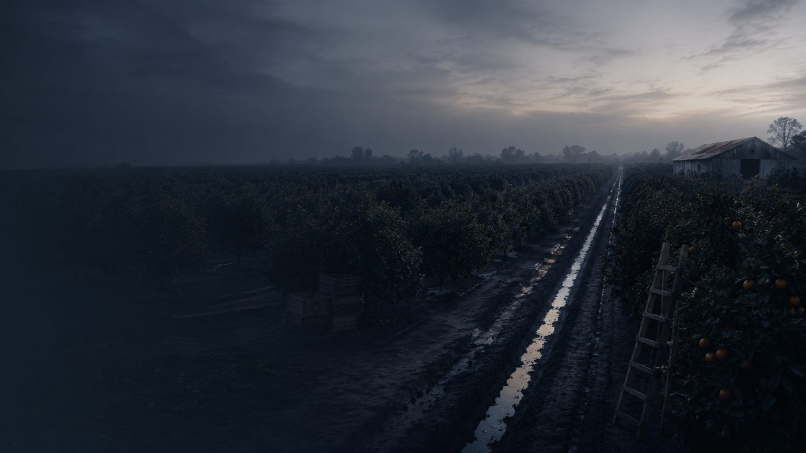

About
We’re from here
Monsoons is a small company in Mesa. We do one thing: get East Valley businesses recommended by AI when their customers ask who to hire.
Why we’re called Monsoons
The storm is the part you notice
Everybody who’s spent a summer here knows the pattern. The sky goes green, the dust wall comes over the 60, and for twenty minutes it’s the only thing happening in the Valley. Then it’s gone and the streets are dry by noon.
But that’s not what the monsoon is for. The storm is the part you notice. The water that soaks down and refills what’s under the ground is the part that matters, and nobody sees that happen.
Our work is the same shape. There’s a spike you’ll notice in the first few weeks, and there’s a record underneath it that keeps working after the spike settles.
We’d rather explain that on day one than let you discover it in month three. Most companies selling anything with “AI” in it right now are doing the opposite.
The Valley
Somebody dug the canals twice
Long before any of this was here, people cut hundreds of miles of irrigation canals across this valley by hand. They farmed it for centuries. Around 1450 that society came apart, and the fields went back to desert.
Fourteen hundred years later, settlers arrived in what became Mesa, found the old canal beds still cut into the ground, cleared them out, and started using them again. Some of the water moving through the Valley today runs along lines that were surveyed by people whose names nobody wrote down. Phoenix is named for exactly that idea, a city that came back up out of another one.
We think about that a lot, because it’s the same principle we sell. The channel outlasted everyone who dug it. What you build into the record stays in the record.

Then and now
These were groves before they were parking lots
Half the strip malls we walk into are standing on what used to be citrus. The water still runs where somebody dug it. That is the part we think about when we talk about building a record.
Straight answers
We’re new, and we’ve built the deal around that
We’re not going to pretend to be a fifteen-year-old agency. We’re a young company, we’re local, and we started this because almost nobody in the East Valley is paying attention to how AI answers questions about local businesses. That window is open right now.
So we don’t ask you to trust us. We show you your own phone. We save what the AI said before we touched anything. We put the standard in writing before we start, and you keep your money until we’ve hit it.
If we can’t prove it, we haven’t earned it. That’s the whole business model, not a slogan.
You’ll also notice we tell you what we can’t do. That costs us some deals. We think it’s worth it, because the people in this industry who promise everything are going to spend next year explaining themselves.
Who we are
Five people from the East Valley, and what each of them actually does
Monsoons was founded by Hyrum Hurst, who built the measurement method this company guarantees against. He works across several AI projects, including with QuarterSmart, an AI studio here in Mesa, and started this one to point that work at the businesses in his own city.
Most of what I work on has nothing to do with Mesa. This does. The businesses I grew up going to are about to become invisible to the way their own customers search, and almost nobody local is telling them.
Day to day it is run by a team he put together here, and the mix is deliberately unlike a marketing agency.
Cullen Brown — head of growth. Self-taught in AI and software, and the most technically capable of us. He builds and runs the measurement tooling the guarantee depends on. When we say 150 measurements a campaign, recorded so you can check them, Cullen is the reason that is a real number and not a claim.
Grady Sherwood — head of partnerships. Sells on commission for a living and before that cold-called and closed life insurance, from a family with a long record in it. If you have ever had that call, you know how hard the job is. He is who you will mostly be talking to.
Jace Anderson — operations. Co-founder of JJ’s Junk Removal here in Mesa: registered, running contractors, taking work off Nextdoor. He is the one who tells us when an idea sounds like something no owner has time for, and he is usually right, because he is one.
Samuel Miranda — coverage. Built an audience from nothing, which needs the same instinct good coverage does: knowing what a person will actually stop and read. He writes the pieces that get published about you, and keeps the before-and-after you get shown at the end.
Between us there is more than a decade in sales roles — cold calling, commission, running a business — and a shared dislike of how that industry usually works. That is genuinely why this company is built the way it is. We publish the standard before you pay, we guarantee the outcome, and you buy only the part you want. None of us wanted to build another place that pressures people.
We train our own people instead of hiring credentialed marketers, because the method is teachable and the measurement is what matters. Nobody has ten years of experience in this. Answer engines have not existed for ten years.
How we work
What you can expect from us
We come to you
We’ll meet you at your shop, your truck, or wherever you actually are. We’re twenty minutes from most of the East Valley.
You approve everything
Nothing gets published about your business until you’ve read it and said yes. We write it from what you tell us, and we don’t embellish.
Plain language
If we ever use a word you’d never use, stop us. Being confused is not the same as being impressed, and we’re not interested in the second one.
You own the work
The coverage is about your company. It stays up whether you keep working with us or not, and you can reuse it however you want.
No contracts to escape
The monthly option cancels any month. We’d rather keep you because it’s working than because you’re stuck.
We’ll tell you if it’s not for you
Some businesses already show up fine, and some have bigger problems than this. If the audit says that, we’ll say so and not sell you anything.
The long view
A saguaro does not grow an arm until it is sixty
Nothing out here got established quickly. The stuff that lasts in this valley took its time, and the coverage we build for you works the same way: the spike is fast, the record is slow.
Who we work with
We’re partnered with QuarterSmart
Showing up in AI answers is one problem. Getting AI to actually do work inside your business is a different one, and it’s bigger than us.
So we partner with QuarterSmart, an AI studio here in Mesa, for that side of it, automating the repetitive parts of your operation, handling the same five phone questions you answer forty times a week, training your staff on tools they’ll actually keep using. They build it, host it, and maintain it.
If that’s useful to you, we’ll make the introduction. If all you want is to get found, that’s a complete job on its own and we’re happy to just do that.
Also
We build websites people don’t bounce off
A lot of the places we walk into have a site somebody’s cousin made in 2016. It loads slow on a phone, it doesn’t say what you actually do, and AI can’t read it properly, which means it’s working against the rest of what we’re doing for you.
We build sites that look designed on purpose and that are structured so a machine understands them: real pages answering the questions people already call and ask you, marked up so AI can pull the right hours, the right services, the right phone number. Quoted once we have seen what you have now, and it is yours outright when it ships.
Start here
Let us show you where you stand
Five questions your customers would ask, run on three platforms, screenshots sent to you. Free, and we’ll tell you honestly if you don’t need us.